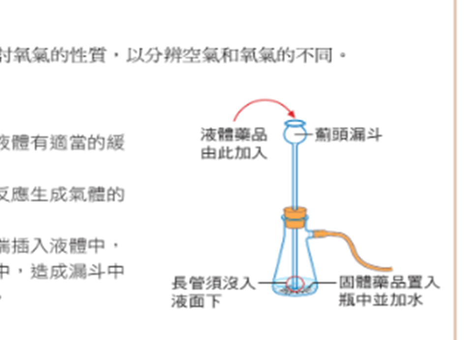
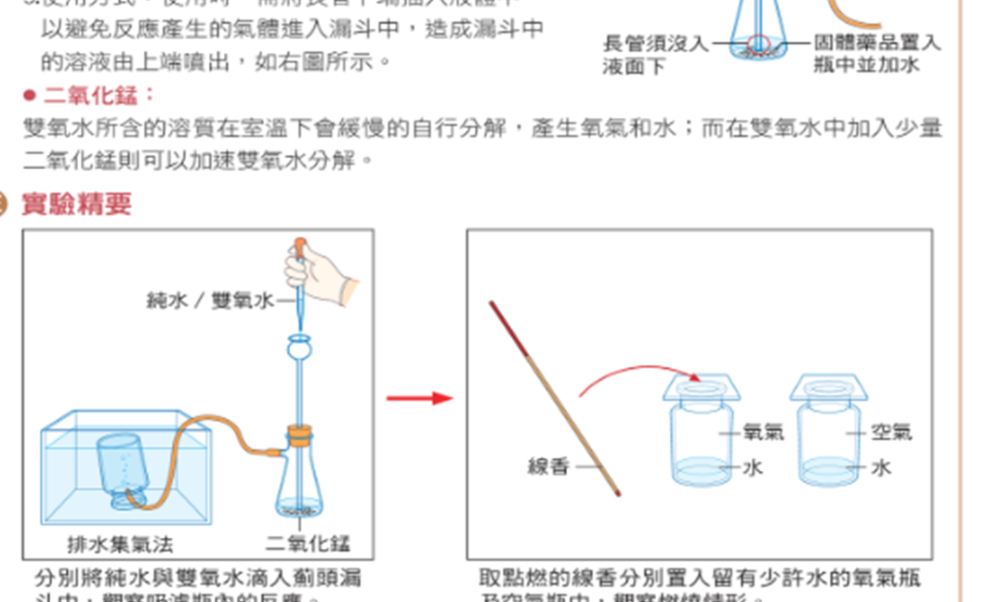
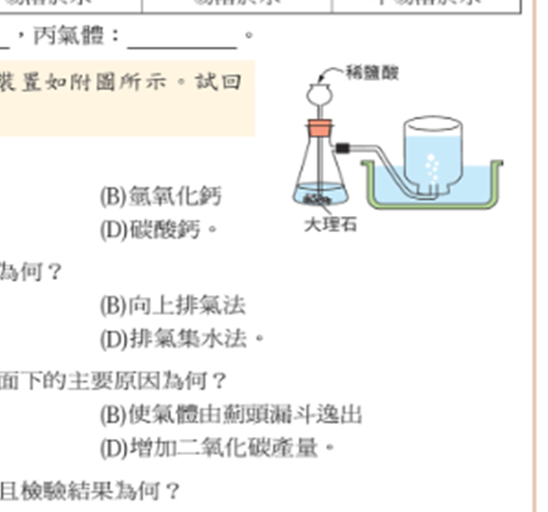

探
本節探究 空氣裡最多的是氧氣嗎？
重點概覽：組成 ｜ 氮氧氬 ｜ 製氧實驗 ｜ 二氧化碳
我們靠氧氣活著，所以很容易以為空氣「大半是氧」。線香在某一瓶裡燒出火花。先預測：吸一大口氣，最多的氣體是哪一種？下面各站找證據。
探究問題：吸進去的空氣裡，最多的是氧氣嗎？線香怎麼分辨哪一瓶是氧氣？
重點概覽：組成 ｜ 氮氧氬 ｜ 製氧實驗 ｜ 二氧化碳
我們靠氧氣活著，所以很容易以為空氣「大半是氧」。線香在某一瓶裡燒出火花。先預測：吸一大口氣，最多的氣體是哪一種？下面各站找證據。
固定氣體與變動氣體
探究線索：乾空氣體積百分率加起來是不是剛好 100%？最多的是氮還是氧？
| 氣體 | 氮氣 | 氧氣 | 氬氣 | 其他氣體 |
|---|---|---|---|---|
| 體積比（%） | 約 78 | 約 21 | 約 0.9 | 約 0.1 |
\(78+21+0.9+0.1=100\)。氮、氧、氬比例較固定，叫 ； 二氧化碳、水蒸氣、臭氧等會隨地點、天氣改變，叫 。
橫軸 1%＝3 px：氮 \(78\times 3=234\)、氧 \(21\times 3=63\)、氬 \(0.9\times 3=2.7\)。其他 0.1% 只有 0.3 px，圖上幾乎看不見。
這一站的證據：乾空氣氮約 78%、氧約 21%。下一站看每種氣體會不會燒、拿來做什麼。
氮、氧、鈍氣、二氧化碳
探究線索：氧氣會自己燒掉嗎？還是只是讓別的東西燒得更旺？澄清石灰水遇到哪一種氣體會變白濁？
| 氣體 | 特性 | 用途 |
|---|---|---|
| 氮氣 | 無色無味；約 78%；不易溶於水；不自燃、不助燃；常溫很安定 | 製氨；食品包裝保鮮；液態氮作冷凍劑（低於 \(-196\,^{\circ}\mathrm{C}\)） |
| 氧氣 | 無色無味；約 21%；不易溶於水；不自燃、能助燃 | 呼吸；助燃；醫療、航空、工業 |
| 氬氣 | 乾空氣第三多；無色無味；不易溶；化學惰性 | 燈泡延長燈絲壽命；焊接防氧化 |
| 氖氣 | 不易溶；放電管發出紅光 | 霓虹燈 |
| 氦氣 | 密度很小（只比氫大一點） | 氣球（比氫安全） |
1. (
) 氧氣會自燃且能助燃。
訂正：
2. (
) 鈍氣因為不助燃、不自燃才叫鈍氣。
訂正：
3. (
) 氦的密度比氫小，所以用來灌氣球。
訂正：
甲氮 乙氧 丙氦 丁二氧化碳 戊氫 己氖 庚氬
1. 食品包裝常用 。
2. 安全的浮力氣球用 。
3. 含量前三： 。
4. 通電發紅光： 。
5. 呼吸需要： 。
6. 石灰水檢驗： 。
7. 鈍氣： 。
8. 密度最小： 。
這一站的證據：氧助燃不自燃；氮最多又安定。下一站動手製氧，用線香對照空氣。
雙氧水、二氧化錳、排水集氣、線香
完整步驟見實驗專區 2-3。這裡留精要、反應式與對照表。
探究線索：先加純水再加雙氧水，哪一瓶會冒泡？線香在氧氣瓶和空氣瓶裡哪一邊火花較大？
目的：用排水集氣法收集氧氣，比較空氣與氧氣的助燃性。

長管須沒入液面下，氣體才不會從漏斗衝出（講義原圖）
\[\text{雙氧水}\xrightarrow{\text{二氧化錳}}\text{水}+\text{氧氣}\]

左：排水集氣法收集氧氣 ｜ 右：線香比較氧氣瓶與空氣瓶（講義原圖）
| 檢測 | 氧氣瓶（實驗組） | 空氣瓶（對照組） |
|---|---|---|
| 點燃的線香 | 燃燒變劇烈，產生火花 | 繼續燃燒，沒有變得很劇烈 |
這一站的證據：氧氣可用排水集氣收集，線香火花證明它助燃。下一站看二氧化碳怎麼做、三種集氣法怎麼選。
排水、向上排氣、向下排氣
探究線索：氣體又溶於水又比空氣重，導管該伸到集氣瓶底還是口朝下？薊頭漏斗為什麼要插到液面下？
\[\text{碳酸鈣}+\text{鹽酸}\rightarrow\text{氯化鈣}+\text{水}+\text{二氧化碳}\]
常用大理石（主成分碳酸鈣）。雖微溶於水，仍常用排水集氣，因為得到的氣體較純。

稀鹽酸＋大理石；長管沒入液面；排水集氣收集 \(\mathrm{CO_2}\)（講義原圖）
溶於水、比空氣重：\(\mathrm{SO}_2\)、\(\mathrm{HCl}\)
溶於水、比空氣輕：氨 \(\mathrm{NH}_3\)
| 氣體 | 密度 \((\mathrm{g/cm}^3)\) | 對水的溶解 |
|---|---|---|
| 甲 | 0.00133 | 不易溶 |
| 乙 | 0.00183 | 易溶 |
| 丙 | 0.00071 | 易溶 |
| 空氣 | 0.0012 | 不易溶 |
空氣密度 \(0.0012\,\mathrm{g/cm}^3\)（\(20\,^{\circ}\mathrm{C}\)、1 atm）。甲比空氣略重且不易溶 → 排水集氣；乙比空氣重且易溶 → 向上排氣；丙比空氣輕且易溶 → 向下排氣。
1. 大理石主成分是 。
2. 上圖常用的收集法是 。
3. 石灰水變 表示有二氧化碳。
這一站的證據：集氣法看溶解性和密度。收成速記後，就能回答本節問題。
比例、性質、製備
證據卡：這些句子用來支撐下面的「本節主張」。先對照組成表和線香實驗，再決定你同不同意。
| 觀念 | 記住這句 |
|---|---|
| 乾空氣 | 氮 78%、氧 21%、氬 0.9%、其他 0.1% |
| 氧氣 | 不自燃、能助燃；排水集氣 |
| 氮氣 | 不助燃；食品包裝、液態氮 |
| 二氧化碳 | 石灰水變白濁；大理石＋鹽酸 |
| 集氣 | 不溶→排水；溶且重→向上；溶且輕→向下 |
空氣最多的是氮；氧氣用線香的火花來認
吸進去的空氣裡，最多的是氮氣（約 78%），氧氣約 21%。氧氣不自燃、能助燃，所以線香在氧氣瓶裡火花比較大。雙氧水加二氧化錳可用排水集氣法收集氧氣；二氧化碳用大理石和稀鹽酸製備，澄清石灰水會變白濁。
下一站要問：波傳走了什麼？物質還是能量？ 先用下面練習檢驗你的主張。
基本題 5 題 ＋ 進階題 5 題
檢驗主張：做題時對照本節問題——空氣裡最多的是氧氣嗎？線香怎麼分辨氧氣瓶？
1. 乾空氣最多的是 。
2. 氧氣體積比約 %。
3. 氧氣 但能助燃。
4. 霓虹燈紅光來自 。
5. 二氧化碳使石灰水 。
1. \(78+21+0.9+0.1= \)。
2. 密度 0.00071 且易溶，用 。
3. 觸媒是 。
4. 起初的氣體 （混有空氣）。
5. 滅火可用二氧化碳，因為它 且比空氣重。